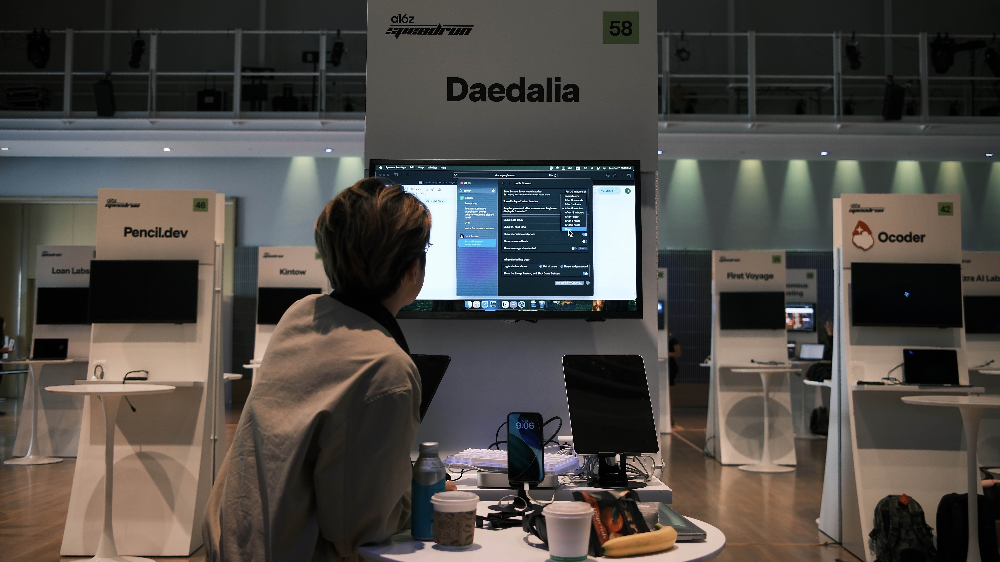

ROBERT LI > SOULLINK AItechnical game designer |
|||
| Discord |

With the a16z Demo Day looming on the calendar, the energy in the studio shifted from steady building to a full-on sprint. As we neared the finish line, I led to keep our momentum high and our vision sharp. It wasn’t just about working faster; it was about working smarter, rapidly iterating on every touchpoint to ensure the product felt seamless. I spent my days bridging the gap between design and development, pushing for a snappier AI chat experience that responded to text and voice with minimal latency. Keeping the team aligned under that kind of pressure meant making tough calls on the fly, but it ensured we stayed focused on delivering a high-quality, polished experience that was ready for the spotlight.
I wanted the chatbot to feel like a living entity rather than just a UI element, so I built out a complex framework that translated digital logic into fluid, emotive movement. This involved balancing technical performance with aesthetic "soul," ensuring that every transition and reaction felt natural in real time. By overseeing the entire production pipeline—from the initial rigging to the final lighting and movement—I was able to bridge the gap between AI responses and visual feedback, creating an immersive character that reacted to users with a human like charm.